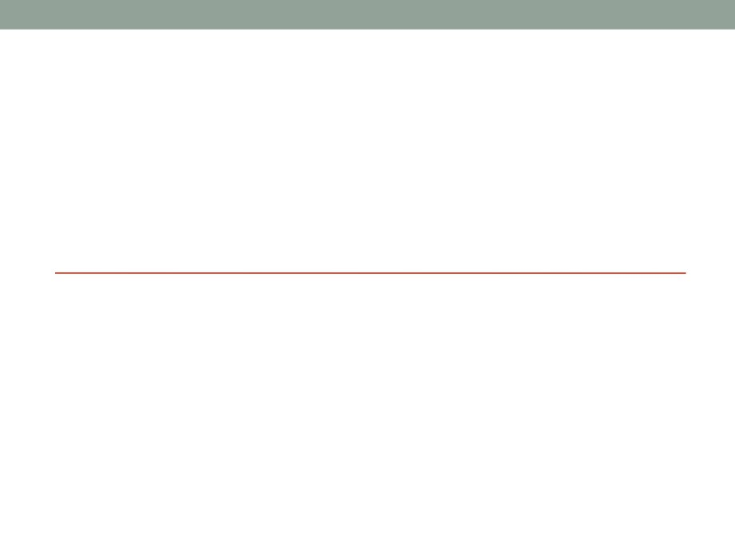

DEFINISANJE
ZAHTJEVA I ANALIZA IS
Vrste modela IS
• Model podataka opisuje ŠTA su podaci i ŠTA oni opisuju.
• Konceptualni model opisuje podatke i veze između
podataka.
• Najčešći konceptualni model je model entiteti-veze.
• Logički model opisuje strukturu podataka i logičkih
datoteka, a najčešći logički model je relacioni model
podataka.
• Model funkcija opisuje KAKO se prikupljaju, obrađuju i
distribuiraju podaci.
• Model funkcija se oblikuje razlaganjem (dekompozicijom) funkcija,
iterativno od vrha prema dolje (od globalnih funkcija do osnovnih
procesa).
Vrste modela IS
• Model procesa opisuje obradu podataka posmatranog
sistema.
• Najčešći model procesa je dijagram toka podataka.
• Model dogaÿaja opisuje KADA se podaci obrađuju,
odnosno razmatra učinke koje događaji imaju na procese
i podatke.
• Npr. dijagram promjene stanja.
• Model resursa/sredstava opisuje izvršioce, odnosno KO
obrađuje podatke, GDJE se podaci nalaze i GDJE se
podaci obrađuju.
Ključne ličnosti u kreiranju IS
•
Korisnik (korisnik usluga, klijent, osoba ili grupa za koju se gradi IS) -
neposredno koristi IS pri obavljanju svakodnevnih poslova ili koristi
informacije dobijene iz IS.
•
Vlasnik sistema (naručilac, stvarni vlasnik ili predstavnik uprave) -
naručuje i plaća razvoj i održavanje sistema, postavlja prioritete i
određuje politiku njegovog korišćenja.
•
Projektant (dizajner sistema) - tehnički stručnjak koji oblikuje sistem tako
da zadovolji zahtjeve korisnika, prevodi poslovne zahtjeve i ograničenja u
tehničko rješenje, oblikuje datoteke, baze podataka, ulaze, izlaze,
ekranske forme, mrežu i programe, integriše rješenje, a može biti i
graditelj sistema.
•
Graditelj sistema (programer, projektant, stručnjak koji izgrađuje sistem)
- provjerava njegovu ispravnost te ga isporučuje u primjenu, konstruiše
komponente sistema na osnovu specifikacija koje rade dizajneri sistema.
•
Sistem analitičari - razumiju i poslovanje i računarsku obradu podataka.
Njihov zadatak je da provode sistemsku analizu i dizajn. Povezuju one
koji trebaju računar i one koji poznaju informacione tehnologije.
Prikupljanje podataka
• Vrši se sprovođenjem intervjua, upitnika ili ankete, (može i
posmatranjem, čitanjem dokumentacije, mjerenjem,
uzorkovanjem, simulacijom, i sl.) i sačinjavanjem
odgovarajućeg zahtjeva
• Intervju - treba pitati o svemu što se smatra važnim, ništa nije
samo po sebi razumljivo i svima jasno (bez pretpostavki)
•
1. Pitanja zatvorenog tipa: Koliko ... obrađujete (u nekom razdoblju)?,
Na koji način obrađujete ... ?;
•
2. Pitanja otvorenog tipa: Što mislite o ... ?, Koji su najveći problemi?;
•
3. “Probna” pitanja: Zašto?, Možete li navesti primjer za takvu
situaciju? Molim detaljnije objašnjenje za
• Preporučuje se iskrenost i nepristranost, pažnja i jezgrovitost
kako bi se našlo najprikladnije rješenje
• Grupno intervjuisanje je potrebno izbjegavati
Prikupljanje podataka
• Upitnik je u suštini pismeni intervju
• Sadrži pitanja koja se postavljaju tokom razgovora (okvirno 20
pitanja).
• Može se dostaviti korisniku prije ili nakon intervjua.
• Nedostaci upitnika su slijedeći:
• ispitanik može prilagoditi (kontrolisati) svoje odgovore,
• teško je procijeniti iskrenost (spontanost) odgovora,
• može i obeshrabriti ispitanika.
• Anketa može da obuhvatiti više ispitanika.
• Pitanja su zatvorenog tipa, a odgovori i obrada odgovora mogu se
standardizovati.
• Pogodna je za popis resursa.
Analiza intervjua
• Analizom odgovora se:
• razdvajaju činjenice od mišljenja,
• utvrđuje se da li pojedine činjenice odgovaraju drugima,
• analiziraju činjenice koje se ne poklapaju i
• vrši provjera odgovora različitih sagovornika na isto pitanje
Zapisnik
• Dokumentovanje razgovora
• Kada u razgovoru sudjeluje više analitičara, određuje se
voditelj razgovora koji je ujedno i zapisničar, a ostali ulažu
primjedbe;
• Zapisnik treba da sadrži:
• naziv projekta,
• vrijeme i mjesto održavanja razgovora,
• spisak učesnika,
• sadržaj razgovora (tekst zapisnika),
• popis prikupljene dokumentacije i
• ime zapisničara;
• Zapisnik mora sadržavati ono što je rečeno i slijediti tok
razgovora;
• Zapisnik ne smije nametati zaključke, jer su oni rezultat analize
Proučavanje dokumenata
• Prikupljaju se svi dokumenti do kojih se može doći: dokumenti koji su nastali kao
rezultat analize procesa, tipični dokumenti (pravilnici, zakoni, obrasci, izvještaji) i
dokumenti nastali analizom podataka
• Poželjno je da dokumenti budu reprezentativni, tj. popunjeni na tipičan način.
• Stalno bilježenje nekih podataka ne mora značiti da su ti podaci stvarno potrebni.
• Treba prikupiti više uzoraka iste vrste dokumenta
• Vrijednost informacija o analiziranoj organizaciji prikupljena (samo) preko
dokumenata je niska.
• Treba shvatiti:
• zašto i kada dokumenti nastaju,
• kako se popunjavaju,
• koliko su potrebni,
• šta treba promijeniti da bi se popravili (sadržaj, lakoća popunjavanja i čitanja).
Elementi prikupljanja podataka
• Osim prikupljanja zahtjeva i njihove analize, poželjno je
sprovesti i:
• Proučavanje dokumenata
• Evidencija i analiza postojećih aplikacija
• Posmatranje poslovnog sistema
• Radni sastanci
• Razvoj prototipa
• Istorijski aspekt organizacije
• Postojeće metode, procedure i tehnička sredstva koja se u sistemu
koriste
• Djelatnost, odnosno glavni poslovi organizacije i njihov obim
• Ljudski faktor (radna snaga)
• Budući (očekivani) zahtjevi sistema
• ...
Najčešći problemi prikupljanja informacija
• Ponašanje korisnika često može da uzrokuje niz problema pri
definisanju zahtjeva za IS.
1. Taktika “kuhinjskog sudopera”: korisnik navodi (preko)brojne
potrebe, gomilu nepotrebnih izvještaja, ekranskih formi,
sortiranja, izračunavanja i sl.
• Ovakav pristup obično je uzrokovan pomanjkanjem iskustva korisnika,
koji ne zna šta bi mu stvarno moglo zatrebati ili nije u stanju izdvojiti
ono šta je bitno;
2. Taktika “dimne zavjese”: korisnik traži više mogućnosti, a
zapravo mu je potrebna samo jedna ili dvije.
• Dodatni zahtjevi služe za postizanje bolje nagodbe sa analitičarom.
Ova taktika obično oslikava korisnika sa dobrim poznavanjem onoga
šta želi, a zahtjeve treba reducirati na one realne i izvodljive;
3. Taktika "Treba mi isto, ali u boljem obliku": korisniku koji
koristi ovu taktiku nedostaje volja ili znanje, a ponekad oboje.
• Šanse za uspješno definisanje problema su male, jer samo korisnik
može izraziti svoje potrebe i probleme.
Analiza sistema
• Analiza sistema (sistemska analiza) je raščlanjivanje sistema na
njegove komponente da bi se proučilo kako te komponente rade i
međusobno komuniciraju.
• Analiza sistema se provodi sa namjerom sinteze sistema i razvoja
aplikacija.
• Sinteza sistema je ponovno objedinjavanje komponenti u cjeloviti,
poželjno poboljšani, sistem.
• Analiza sistema obuhvata:
• razmatranje i planiranje sistema i projekta,
• proučavanje i analiza postojećeg poslovnog IS,
• definisanje poslovnih zahtjeva i prioriteta novog IS.
Analiza sistema
• Svrha, cilj i dubina analize sistema mogu se predstaviti slijedećim
aktivnostima:
• Automatizacijom poslovnih procesa, odnosno povećanjem efikasnosti korisnika
analizom problema i uklanjanjem uzroka;
• Poboljšanjem poslovnih procesa, tj. povećanjem efikasnosti i djelotvornosti,
analizom trajanja i koštanja poslovnih procesa;
• Reinženjeringom poslovnih procesa ili preoblikovanjem poslovnih procesa,
predstavlja radikalni redizajn poslovnih procesa
Aktivnosti analize sistema
Aktivnosti analize se mogu sistematizovati u tri nivoa, gdje svaki nivo
traži odgovor na odgovarajuća pitanja
1. Detaljna analiza postojećeg sistema, te utvrđivanje potreba i
zahtjeva:
• Kako radi postojeći sistem?
• Na koji način korisnici koriste sistem da bi obavili svoj posao?,
• Koji su problemi pri korištenju aplikacija?
2. Detaljna specifikacija zahtjeva za IS:
• Koji su podaci potrebni?,
• Kome su potrebni? Kada? Od koga?, Ko ih stvara?
• Koji su izlazni podaci? Kakav im je oblik?
• Koji su izvori izlaznih podataka?
• Na koji način se podaci prikupljaju i objedinjuju?
3. Daljnja razrada granica projekta.
Aktivnosti analize sistema
Postupci i tehnike analize
• Moderna strukturirana analiza je procesno usmjerena tehnika
modeliranja poslovnih zahtjeva za sistem.
• Informaciono inženjerstvo je procesno osjetljiva tehnika,
usmjerena ka podacima i proučavanju poslovnog sistema ili
njegovih većih dijelova kao cjeline.
• Brzi razvoj aplikacija je razvoj verzija aplikacija, koje mogu
evoluirati do konačnog rješenja.
• Združeni razvoj aplikacija je analiza zasnovana na intenzivnim
radnim sastancima na kojima vlasnici, korisnici, analitičari,
dizajneri i projektanti zajednički definišu i oblikuju sistem.
• Objektno usmjerena analiza omogućava: modeliranje
učaurivanjem podataka i procesa u objekte, proučavanje
postojećih objekata da bi se vidjelo mogu li se ponovno
iskoristiti ili prilagoditi za nove primjene
Definisanje zahtjeva
IEEE standard definiše zahtjeve koje sistem mora posjedovati:
• uslov ili sposobnost koje korisnik treba da ima da bi riješio problem
ili ostvario cilj,
• uslov ili sposobnost koju mora posjedovati sistem ili komponenta
sistema da bi zadovoljila ugovor, standard, specifikacije ili neki
drugi ugovoreni document,
• dokumentovanu prezentaciju prethodno definisanih uslova ili
mogućnosti
• Zahtjevi ne sadrže detalje dizajna, detalje implementacije ili
informacije vezane uz planiranje projekta.
• Pažnja se usmjerava na ono ŠTA se želi izgraditi, a ne ulazi se u
detalje kako i kada to napraviti
• Nepotpuno definisani zahtjevi čine nemogućim planiranje projekta i
praćenje promjena
Vrste zahtjeva
Zahtjevi mogu biti:
• Poslovni zahtjevi definišu ciljeve organizacije i daju opis
problema koje treba riješiti.
• Korisnički zahtjevi opisuju zadatke koje korisnik mora obaviti
služeći se aplikacijama.
• Funkcionalni zahtjevi definišu softversku funkcionalnost, koju
treba ugraditi u proizvod da bi omogućio korisnicima obavljanje
njihovih zadataka.
• Nefunkcionalni zahtjevi su standardi, pravila i ugovori koje
proizvod mora zadovoljiti, opisi vanjskih interfejsa, zahtjevi za
performansama, ograničenja za dizajn i implementaciju.
Zahtjevi
• Primjer: "Softverski proizvod će ispisati statusnu poruku u
redovnim intervalima, ne manjim od 60 sekundi"
NEPOTPUNI ZAHTJEV
• Šta je statusna poruka
• Pod kojim uslovima će biti ispisana
• Koliko dugo ostaje vidljiva
• Koliko doslijedni intervali moraju biti
• ...
• Ispravka: Modul za nadzor će ispisivati statusnu poruku u za to
određeni dio interfejsa. Poruka će se ažurirati svakih 60 s (±10
s) nakon što započne izvođenje pozadinskog zadatka i biće
vidljiva cijelo vrijeme. Ukoliko se pozadinski zadatak izvodi
normalno, modul za nadzor će ispisivati postotak obavljenog
posla. Modul za nadzor će ispisati "Zadatak obavljen" nakon
što se zadatak obavi. Modul će ispisati poruku o grešci ukoliko
dođe do zastoja u izvođenju.
Zahtjevi
• Primjer: "Softverski proizvod će se trenutno prebaciti između
ispisivanja i skrivanja oznaka koje se ne mogu štampati"
• NEOSTVARIV ZAHTJEV
• Računari ništa ne mogu napraviti trenutno
• Da li programska podrška sama odlučuje kad će se prebaciti iz jednog
stanja u drugo ili je to inicirano akcijom korisnika
• Na koji dio teksta će se primijeniti promjena prikaza: da li samo
označeni tekst, cijeli dokument ili nešto treće
• Da li su "oznake koje se ne mogu štampati" skrivene oznake, posebne
oznake ili kontrolne oznake
• Ispravka: "Korisnik će posebno dogovorenom akcijom, odabrati
da li će se HTML oznake u trenutno otvorenom dokumentu
prikazivati ili ne".
Zahtjevi
• Primjer: "Parser će brzo generisati izvještaj o greškama
HTML oznaka, koji omogućava brzu ispravku grešaka
kada program koriste početnici u HTML-u"
• NEODREĐEN ZAHTJEV
• riječ "brzo" je neodređena
• nije definisano šta predstavlja izvještaj
• kako će se ispraviti greške
• Ispravka: "Nakon što je HTML analizator obradio
datoteku, generisaće izvještaj koji sadrži broj linije i tekst
pronađenih HTML grešaka, te opis svake greške. Ukoliko
nema grešaka prilikom analize, neće se generisati
izvještaj.".
Određivanje zahtjeva
• Poslovni zahtjevi: Sve što opisuje finansijski, trgovački ili drugi poslovni prodor koji
korisnici, ili organizacija koja razvija sistem, mogu dobiti je, najvjerovatnije,
poslovni zahtjev.
• Slučajevi korišćenja ili scenariji: Opšte izjave o korisničkim ciljevima ili poslovnim
zadacima, koje korisnici moraju obavljati. Specifične zadatke treba generalisati u
opšte slučajeve korišćenja.
• Poslovna pravila: Poslovna pravila su operativni principi poslovnih procesa. Ona
nisu funkcionalni zahtjevi.
• Funkcionalni zahtjevi: Funkcionalni zahtjevi opisuju vidljivo ponašanje sistema i
definišu šta će sistem raditi. Treba svima biti jasno zašto sistem „mora” biti u
stanju da obavlja
• Atributi kvaliteta: Zahtjeve koji opisuju poželjne karakteristike sistema: brzinu,
jednostavnost, intuitivnost, robustnost, pouzdanost, sigurnost i efikasnost treba
razmotriti sa korisnicima,
• Zahtjevi vanjskih interfejsa: Ova klasa zahtjeva opisuje veze između sistema i
vanjskog svijeta
• Ograničenja: su uslovi koji ograničavanju izbor rješenja raspoloživih dizajneru ili
programeru. Spadaju u nefunkcionalne zahtjeve i trebaju biti dokumentovani.
Postavljanje prioriteta zahtjeva
• Nužno svojstvo sistema nameće pitanje: Da li vlasnik
sistema nešto stvarno mora imati?
• Postoji tendencija da se previše zahtjeva proglasi nužnim!
• Po definiciji, ako sistem ne uključuje nužne zahtjeve, taj sistem ne
može ispuniti svoju svrhu.
• Treba testirati svaki zahtjev koji se smatra nužnim i probati ga
rangirati.
• Poželjno svojstvo sistema su funkcije koje korisnik želi na
kraju da ima.
• Poželjni zahtjevi mogu i treba da budu rangirani.
• Neobavezna svojstva sistema su proizvoljni zahtjevi,
svojstva i mogućnosti bez kojih se može, iako bi lijepo bilo
ih imati.
• Ovi zahtjevi mogu biti rangirani.
Specifikacija zahtjeva
• Specifikacija zahtjeva (funkcionalna specifikacija) je strukturirani
dokument sa detaljnim opisom očekivanog ponašanja sistema
• Predstavlja cjeloviti i nezavisan pogled na sistem kojeg sačinjavaju:
• funkcionalni i nefunkcionalni zahtjevi
• model organizacione strukture (strukturirani dijagrami),
• opis toka dokumenata (dijagrami toka),
• model procesa (dijagrami toka podataka),
• konceptualni model podataka (dijagrami entiteti - veze).
Dokumentovanje analize zahtjeva
• Kratke definicije zahtjeva bi bile:
• izjava o stanju, ograničenjima i potrebama sistema,
• narativni dokument namijenjen korisniku, ili ga piše korisnik, a
sačinjavaju ga poslovni i korisnički zahtjevi, kao i njihovi prioriteti,
uočeni problemi, ključne pretpostavke i preporuke za njihovo
rješavanje.
• Specifikacija zahtjeva je strukturirani dokument sa
detaljnim opisom očekivanog ponašanja sistema.
• Namijenjen je ugovaračima i izvršiocima razvoja. Predstavlja
cjeloviti i nezavisan pogled na sistem.
• Sačinjavaju ga funkcionalni i nefunkcionalni zahtjevi te njihovi
prioriteti, model organizacione strukture (strukturirani dijagrami),
opis toka dokumenata (dijagrami toka), model procesa (dijagrami
toka podataka), kao i konceptualni model podataka (dijagrami
entiteti - veze).
Loše planiranje zahtjeva
• Nedovoljna uključenost korisnika: Bez korisnika se ne može
tačno znati šta korisnici žele.
• Čudni korisnički zahtjevi: Neopravdana promjena mišljenja
tokom izvedbe uzrokuje prekoračenje predviđenog roka.
• Nejasni (dvosmisleni) zahtjevi: Situacija u kojoj čitalac(i)
zahtjeva taj zahtjev tumači(e) na više načina. To uzrokuje
prepravljanje i gubljenje vremena.
• Pretjerano ukrašavanje: Želja izvođača da dodaju novu
funkcionalnost i zahtjev korisnika za dodacima koji dobro
izgledaju ali ne pridonose funkcionalnosti.
• Minimalističke specifikacije: Tendencija postavljanja minimalnih
zahtjeva uz želju da ih izvođači nadopune tokom izrade, izaziva
smanjenu efikasnost izvođača.
• Zanemarivanje potreba: Zanemarivanje potreba određenih
(grupa) korisnika izaziva stvaranje „opozicije“ projektu
Dobro planiranje zahtjeva
• Svojstva dobro postavljenih korisničkih zahtjeva su
definisana IEEE standardom:
• potpunost (cjelovitost),
• tačnost,
• ostvarivost (izvodljivost),
• nužnost,
• poredak po prioritetima,
• nedvosmislenost i
• mogućnost provjere.
• Cilj je napisati dovoljno dobre zahtjeve, na osnovu kojih
se može pristupiti dizajnu i ugradnji pojedinih komponenti
sistema, uz prihvatljiv stepen rizika.
Dobro postavljanje zahtjeva
•
“Hemičar ili član osoblja hemijske laboratorije može podnijeti
zahtjev za jednom ili više hemikalija. Zahtjev može biti udovoljen ili
dostavom pakovanja hemikalije koja se već nalazila na zalihi
hemijske laboratorije ili upućivanjem narudžbe za novim
pakovanjem hemikalije od vanjskog dobavljača. Osoba koja
upućuje zahtjev mora imati mogućnost pretraživanja kataloga
hemikalija vanjskog dobavljača dok sastavlja narudžbu. Sistem
mora pratiti status svakog zahtjeva za hemikalijama od trenutka
kada je ispunjen do trenutka kada je udovoljen ili otkazan. Takođe,
mora pratiti istoriju svakog pakovanja hemikalija od trenutka kada
stigne u kompaniju do trenutka kad je potpuno upotrebljen ili
odbačen.”
• Na osnovu izjava korisnika i prikupljene dokumentacije modeliraju se
pojedine komponente sistema (procesi, podaci, događaji). Mogu se
definisati preslikavanja uočenih imenica i glagola u konkretne
komponente analitičkog modela.
Vrsta riječi
Primjer
Komponente analitičkog modela
Imenica
Ljudi, organizacije,
• Skladišta podataka (DFD -
softverski
modelovanje toka podataka)
sistemi, jedinice podataka ili
• Entiteti ili njihovi atributi (ERD -
postojeći objekti
dijagram entiteti - veze)
• Klase ili njihovi atributi (dijagram
klasa)
Glagol
Akcije, ono što korisnik
• Procesi (DFD)
može preduzeti ili događaji
• Odnosi (ERD)
koji se mogu dogoditi
• Prelazi (iz stanja u stanje) (STD
- dijagram prelaza stanja)
• Metode klasa (dijagram klasa)